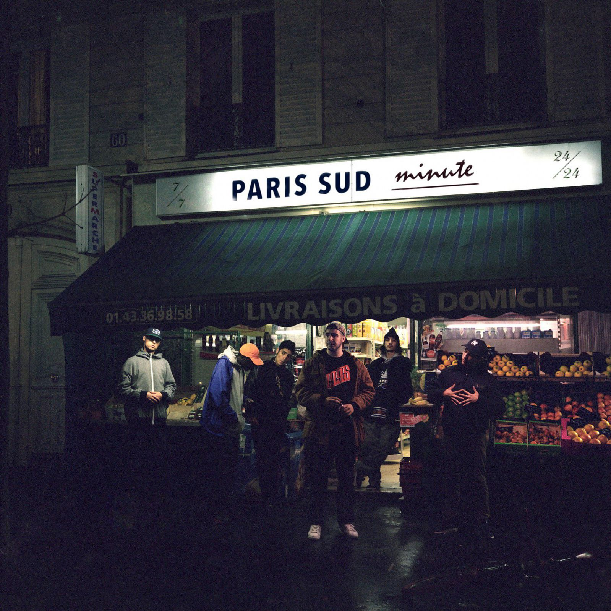
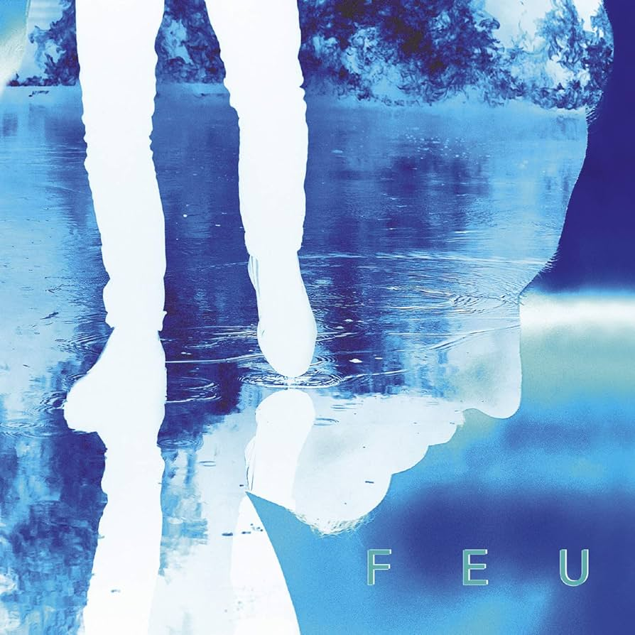
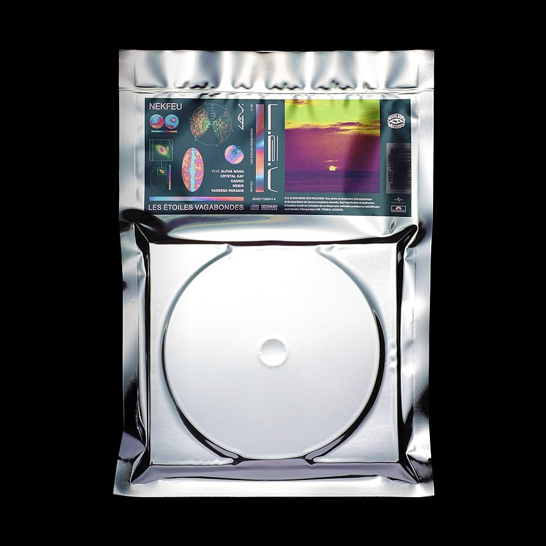
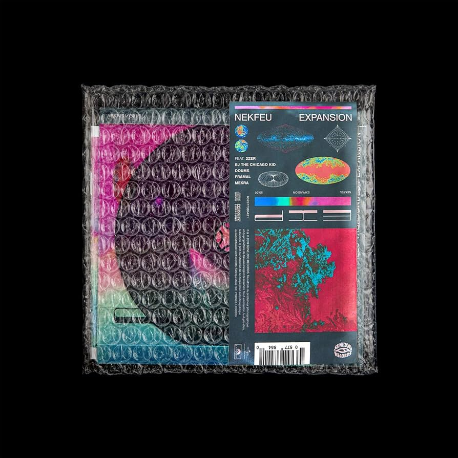

Chers fans de Nekfeu,
Nous avons parcouru les archives pour vous ramener une rétrospective exclusive des tournées marquantes du talentueux rappeur français Nekfeu, alias Ken Samaras. Découvrons ensemble les moments forts de ses performances sur scène.
Anecdote : Avant de briller en solo, Nekfeu était un membre du groupe de rap 1995. Ensemble, ils ont conquis les foules en France et à l'étranger. Les concerts étaient des rassemblements de fans dévoués, propageant l'énergie pure du rap.
Anecdote : Nekfeu a enflammé les scènes de toute la France lors de sa tournée "Feu." Les fans, y compris vous, Noa Rodrigues, se souviennent avec émotion des concerts au mythique AccorHotels Arena de Paris et de sa capacité à créer une connexion unique avec son public.
Anecdote : La tournée "Cyborg" a mis en avant la créativité de Nekfeu. Ses performances étaient un véritable spectacle multimédia, combinant musique et visuels époustouflants pour une expérience immersive inoubliable.
Anecdote : Pour promouvoir son album "Les Étoiles Vagabondes," Nekfeu a captivé les fans dans des salles à travers la France. Il a également fait don d'une partie des recettes de la tournée à des associations caritatives, montrant son engagement envers des causes sociales importantes.
Anecdote : En pleine pandémie mondiale, Nekfeu a choisi de poursuivre la célébration de son album en organisant une extension de la tournée. Cela a démontré sa détermination à offrir de la musique en direct à ses fans, même dans des circonstances difficiles.
Nekfeu continue de marquer son empreinte dans l'industrie musicale avec des tournées inoubliables et des performances énergiques. Assurez-vous, Noa Rodrigues, de suivre ses prochains projets pour ne pas manquer ses futures tournées.
Restez à l'écoute pour plus de musique et de nouvelles passionnantes de Nekfeu !
Cordialement, Noa Rodrigues